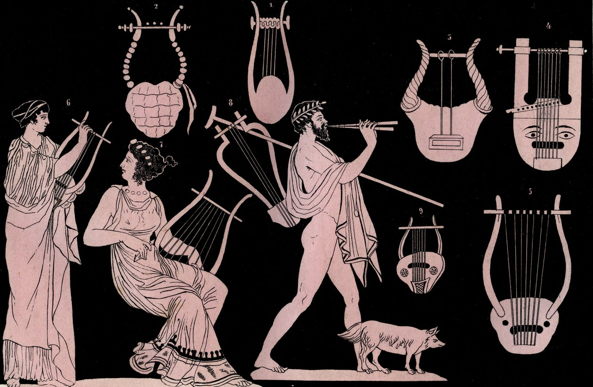
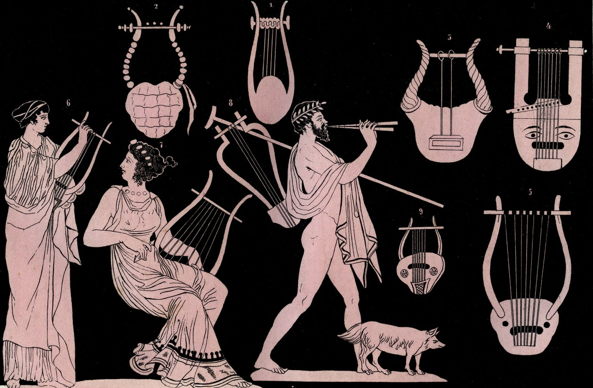
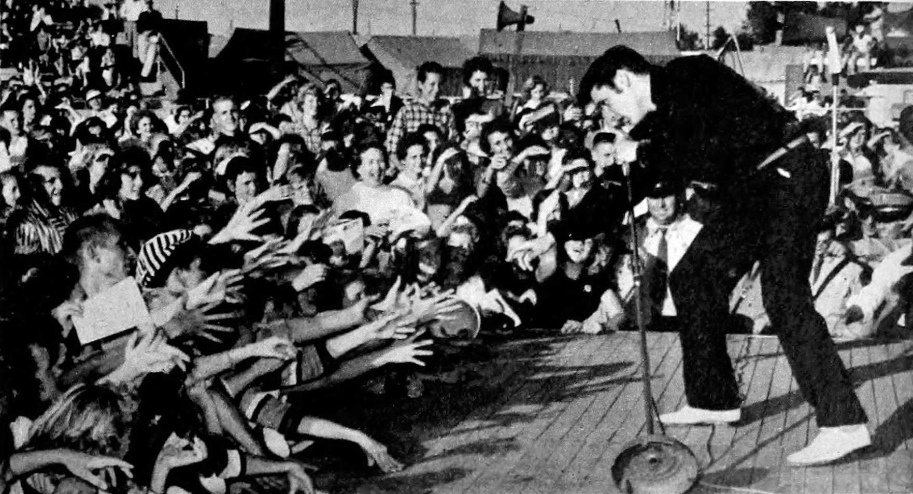
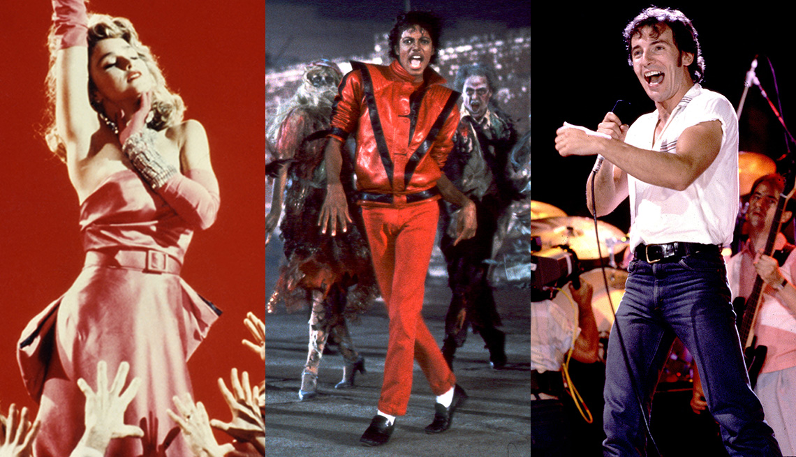
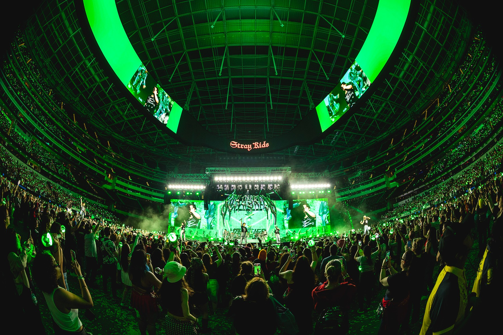

500 BCE
Early musical instruments like lyres and flutes were used in Greece and other civilizations.
A brief timeline highlighting key developments in music history around the world.
Early musical instruments like lyres and flutes were used in Greece and other civilizations.
Baroque period: composers like Bach and Vivaldi shaped Western classical music.
Romantic period: Beethoven, Chopin, and others expanded emotional depth in music.
Jazz emerges in the US, influencing global music styles.
Rock & Roll becomes popular worldwide; Elvis Presley and others lead the movement.
Pop music global icons rise; Michael Jackson, Madonna, MTV popularizes music videos.
Digital music era: streaming platforms like Spotify and YouTube emerge.
Social media and apps like TikTok create viral music trends.
Music continues to evolve globally; live streaming concerts and collaborations dominate.
